ابدأ تمرينك بتسخين مناسب لتجنب الإصابات وتحسين الأداء. التسخين خطوة أساسية لا يجب تجاهلها!
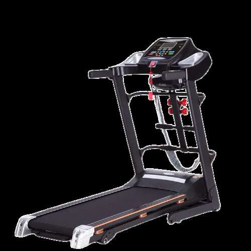
قم بأداء تمارين الإحماء الديناميكية مثل تدوير الذراعين، تمارين الإطالة الخفيفة، وتدوير الجذع لتحضير المفاصل والعضلات للتمرين. هذه التمارين تزيد من تدفق الدم وترفع حرارة الجسم تدريجيا.
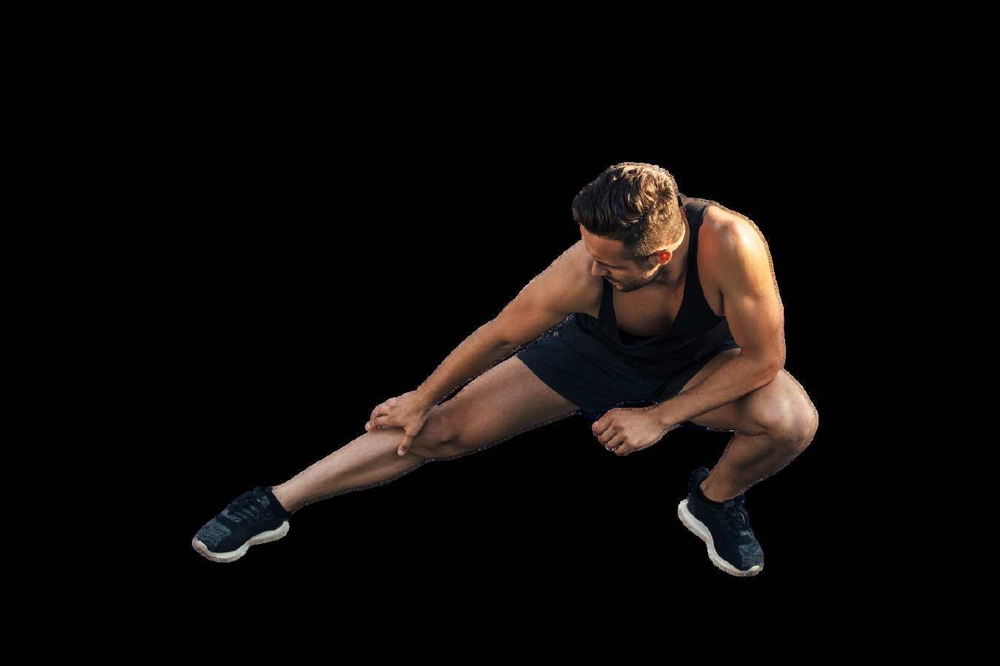
ابدأ بالمشي السريع على جهاز المشي (Treadmill) لتحضير الجسم وتنشيط الدورة الدموية قبل بدء التمرين الأساسي. حافظ على سرعة مناسبة وتدرج في زيادتها.
تمارين لتحسين لياقة القلب والأوعية الدموية وحرق الدهون - اختر الجهاز المناسب لك
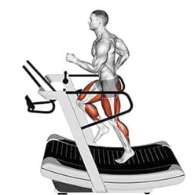
مشي سريع مدة 10 دقائق على سرعة 7.0 - يعمل على حرق الدهون بشكل فعال وتحسين لياقة القلب والأوعية الدموية.
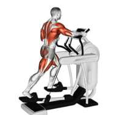
تمرين مدة عشر دقائق - يستهدف عضلات الجسم بالكامل مع تخفيف الضغط على المفاصل. مثالي لجميع المستويات.
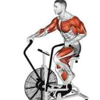
تمرين مدة عشر دقائق - يجمع بين تمرين الجزء العلوي والسفلي من الجسم مع حرق سعرات عالي.
برنامج تدريبي للمبتدئين - ثلاثة أيام في الأسبوع مع تفاصيل كل تمرين بالصور والفيديو
| اليوم | النوع | العضلات المستهدفة |
|---|---|---|
| السبت | Push - دفع | صدر - كتف - ظهر |
| الاثنين | Pull - سحب | بايسبس - ترايبيس - أفخاذ |
| الأربعاء | Push - دفع | ظهر - صدر - المعدة |
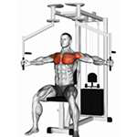
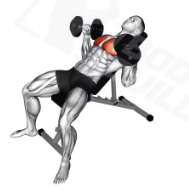
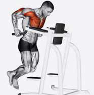
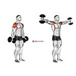


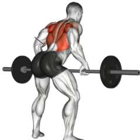

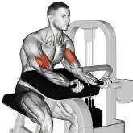
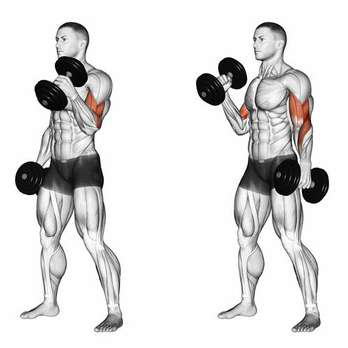

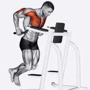
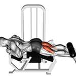
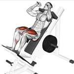
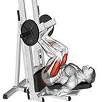
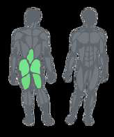
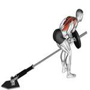
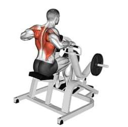


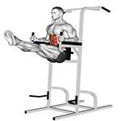
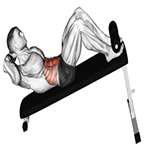
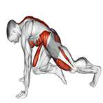
برنامج تدريبي متوسط - أربعة أيام في الأسبوع (تقسيم علوي / سفلي)
| اليوم | النوع | العضلات المستهدفة |
|---|---|---|
| السبت | Upper - علوي | عضلات الجزء العلوي (صدر، كتف، ظهر، ذراعين) |
| الأحد | Lower - سفلي | عضلات الجزء السفلي (أفخاذ، بطات، معدة) |
| الثلاثاء | Upper - علوي | عضلات الجزء العلوي (صدر، كتف، ظهر، ذراعين) |
| الأربعاء | Lower - سفلي | عضلات الجزء السفلي (أفخاذ، بطات، معدة) |
هذا البرنامج مناسب للمستوى المتوسط. يتم تقسيم الجسم إلى جزء علوي وسفلي مع تدريب كل جزء مرتين أسبوعيا للحصول على حجم تدريبي مثالي وتعافي كاف.
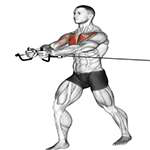


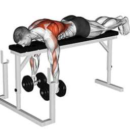
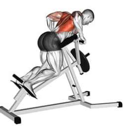
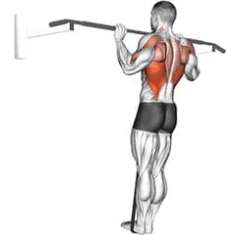
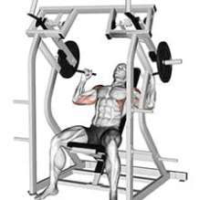
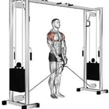
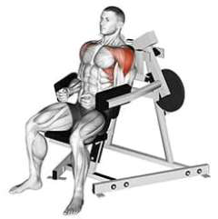
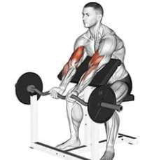

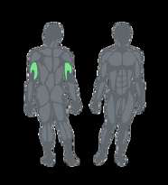
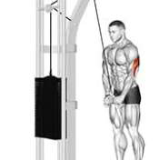


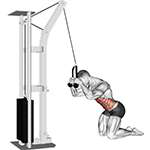
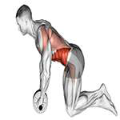
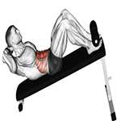
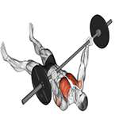
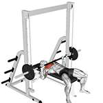
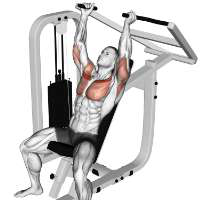
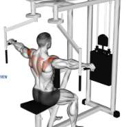

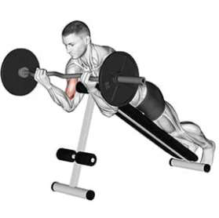
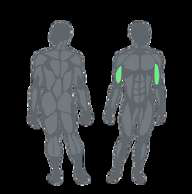
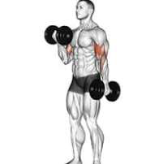


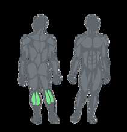


برنامج تدريبي متقدم - خمسة أيام في الأسبوع
| اليوم | النوع | العضلات المستهدفة |
|---|---|---|
| السبت | Pull - سحب | ظهر + بايسبس + سواعد |
| الأحد | Push - دفع | صدر + كتف + ترايبيس |
| الاثنين | Legs - أرجل | أفخاذ + معدة + بطات |
| الأربعاء | Upper - علوي | صدر + ظهر + أكتاف |
| الخميس | Arms+Legs | ترايبيس + بايسبس + أفخاذ |
برنامج متقدم يتيح تدريب كل مجموعة عضلية بتركيز أعلى. يومي الثلاثاء والجمعة للراحة والتعافي. مناسب لمن لديهم خبرة لا تقل عن 6 أشهر في التمرين.
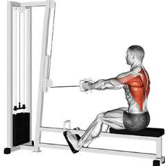

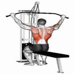


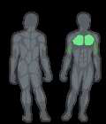
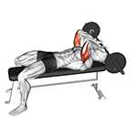
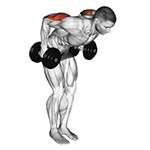

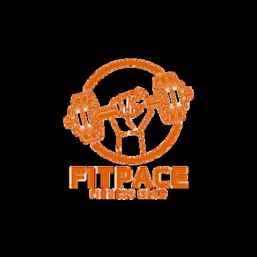
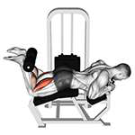


برنامج تدريبي احترافي - ستة أيام في الأسبوع
| اليوم | النوع | العضلات المستهدفة |
|---|---|---|
| السبت | Push - دفع | صدر + أكتاف + ظهر |
| الأحد | Pull - سحب | ظهر + بايسبس + ترايسبس |
| الاثنين | Legs+Push | أفخاذ + صدر + معدة |
| الثلاثاء | Arms - ذراعين | سواعد + بايسبس + ترايسبس |
| الأربعاء | Legs - أرجل | أفخاذ + بطات + معدة |
| الخميس | Push+Arms | صدر + بايسبس + ترايبيس |
هذا البرنامج الاحترافي يتطلب التزاما عاليا وخبرة لا تقل عن سنة. يوم الجمعة مخصص للراحة الكاملة والتعافي. تأكد من النوم الكافي والتغذية السليمة.
برنامج PPL - أحد أشهر أنظمة التدريب وأكثرها فعالية
نظام PPL هو من أفضل أنظمة التدريب حيث يتم تقسيم العضلات إلى ثلاث مجموعات رئيسية. يعتمد على تدريب عضلات الدفع (Push) مثل الصدر والكتف والترايسبس في يوم واحد، وعضلات السحب (Pull) مثل الظهر والبايسبس والسواعد في يوم آخر، ثم عضلات الأرجل (Legs) مثل الأفخاذ والبطات والمعدة في يوم منفصل. يمكن تكرار هذا الدور مرتين في الأسبوع للحصول على 6 أيام تدريب، أو مرة واحدة للحصول على 3 أيام تدريب. هذا النظام يسمح بتعافي كافي لكل مجموعة عضلية مع تحقيق حجم تدريبي مناسب.
| Push (دفع) | Pull (سحب) | Legs (أرجل) |
|---|---|---|
| صدر | ظهر | أفخاذ أمامية |
| كتف أمامي وجانبي | كتف خلفي | أفخاذ خلفية |
| ترايسبس | بايسبس | بطات |
| - | سواعد | معدة |
GLUTES EXERCISES - ONLY FOR WOMEN
يركز الجدول التدريبي على زيادة حجم العضلات في أماكن محددة في الجسم مثل القلوتس والأفخاذ